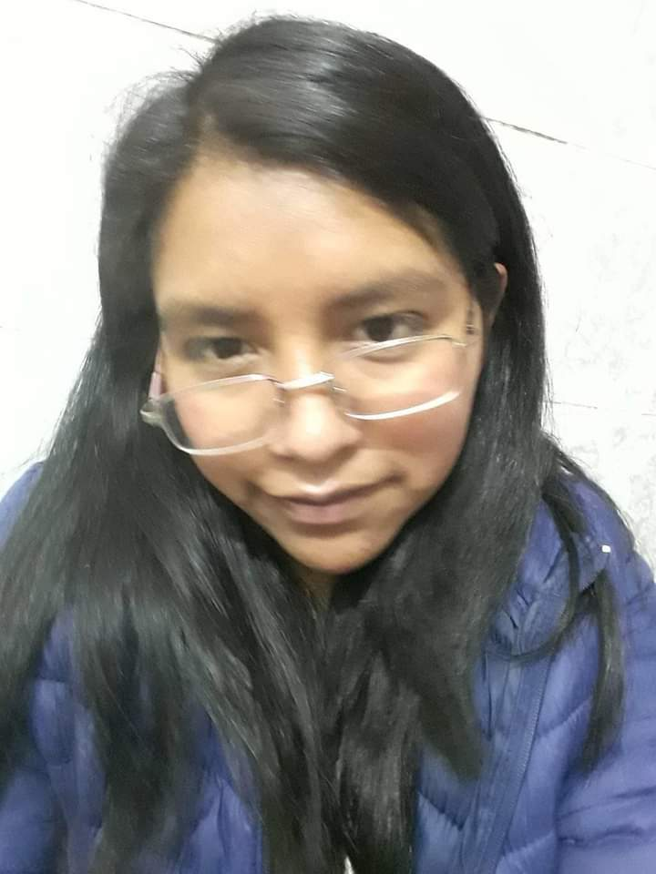

CHRISTEL
FERNANDEZ LIMACHI
"Curiosa, motivada y determinada"
-
71929083-68058904

-
Zona Valle Hermoso Cjn. R.Gonzalez #120

-
Email:
chfernandezlim@gmail.com

"Soy una persona organizada y proactiva, me gustan los desafíos más difíciles y participar en nuevos proyectos, además de aportar todos los conocimientos que he adquirido en mi formación académica. Tengo capacidad para trabajar en equipo e impulsar valores que marquen a las personas, como el del compañerismo y la amistad."
"Me gustaría explotar todos los conocimientos que he adquirido durante mi carrera universitaria. Soy una persona con facilidades para adaptarse a nuevos grupos de trabajo y tareas, además de estar interesado en aportar mis habilidades a la empresa."
COMPETENCIAS
- Trabajo en Equipo
- Liderasgo
- Analisis
HABILIDADES
- Español nativo
- Ingles avanzado
- Frances principiante
IDIOMAS
- Microsof Ofice
- Java Script
- Html, Visual Code
MANEJO DE SOFTWARE
FORMACION
2017-2019
La Paz - Bolivia
TECNICO SUPERIOR EN SISTEMAS INFORMATICOS
INCOS Instituto Tecnico Comercial Superios de la Nacion "Teniente Armando de Palacios"
2011-2017
La Paz - Bolivia
INGENIERO EN PETROLEO GAS Y PROCESOS
UMSA - Universidad Mayor de San Andres - Facultad de Ingenieria
1998-2009
La Paz - Bolivia
DIPLOMA DE BACHILLER EN HUMANIDADES
Unidad Educativa "CRISTO REY"
EXPERIENCIA PROFESIONAL
PASANTE en la Direccion de Produccion y Unidades de Procesos
AGENCIA NACIONAL DE HIDROCARBUROS - UNIDAD DE MANTENIMIENTO Y SEGURIDAD (ANH)
PASANTE en la Direccion General de Territoriwl Militar
MINISTERIO DE DEFENZA - UNIDAD DE MOVILIZACION TERRITORIAL
AUXILIAR de ventas SOAT
UNIVida